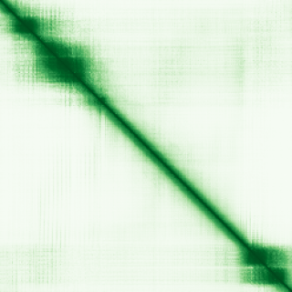
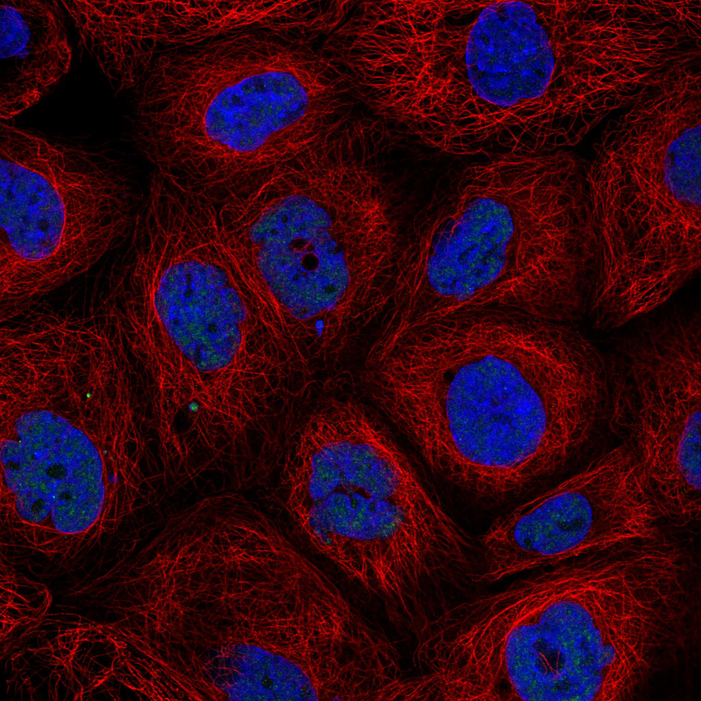
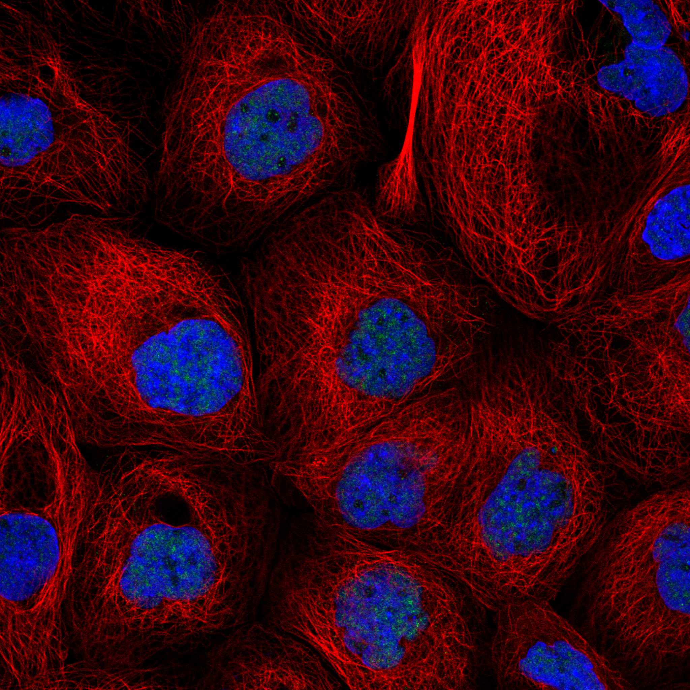

type: protein-evaluation gene: "CHTOP" date: 2026-06-01 tags: [protein-scout, nuclear-protein, evaluation] status: scored ---
CHTOP 核蛋白评估报告
1. 基本信息
| 项目 | 内容 |
|---|---|
| 基因名 / 别名 | CHTOP / C1orf77, FOP |
| 蛋白全名 | Chromatin target of PRMT1 protein |
| 蛋白大小 | 248 aa / 26.4 kDa |
| UniProt ID | Q9Y3Y2 (CHTOP_HUMAN) |
| 评估日期 | 2026-06-01 |
2. 评分总览 (权重: 核×4 大×1 新×5 结×3 域×2 PPI×3 /1.83)
| 维度 | 得分 | 加权 | 加权后 | 关键证据摘要 |
|---|---|---|---|---|
| 核定位特异性 | 9/10 | ×4 | 36 | UniProt: Nucleus+Nucleolus+Nucleoplasm+Nuclear speckle(全ECO:0000269实验); HPA: Nuclear speckles(Supported); GO: nuclear speck(IDA)+nucleolus(IEA)+nucleoplasm(TAS); 纯核蛋白 |
| 蛋白大小 | 8/10 | ×1 | 8 | 248 aa / 26.4 kDa, 接近200-300区间下界 |
| 研究新颖性 | 8/10 | ×5 | 40 | PubMed 26篇; ≤40区间 |
| 三维结构 | 4/10 | ×3 | 12 | AF pLDDT 61.2; 36.7%无序(pLDDT<50); 无PDB实验结构 |
| 调控结构域 | 7/10 | ×2 | 14 | PRMT1-binding/chromatin-targeting(IPR025715); TREX复合体组分; 结合5hmC+招募methylosome |
| PPI | 5/10 | ×3 | 15 | IntAct: DDX39B/TREX组件+MAGOH+EIF4A3+LBR+SRPK2/3+ZC3H18; STRING: unresolvable; LBR=chromatin, TREX=coupled transcription-export |
| 互证加分 | — | — | +1.0 | NuLoc≥2源(UniProt+GO+HPALoc确认); 结构域≥2源(UniProt+InterPro); IntAct实验PPI丰富 |
| 原始总分 | 126/180 | |||
| 归一化总分 | 68.9/100 |
3. 详细分析
3.1 核定位证据
| 来源 | 定位 | 可信度 |
|---|---|---|
| UniProt | Nucleus; Nucleolus; Nucleoplasm; Nuclear speckle | 全ECO:0000269 (实验) |
| HPA (IF) | Nuclear speckles (Supported reliability) | Supported, IF图可用 |
| GO-CC | nuclear speck (IDA:HPA), nucleolus (IEA:UniProtKB-SubCell), nucleoplasm (TAS:Reactome), TREX complex (IDA) | IDA/IEA/TAS |
IF 图像: HPA有IF展示图(Nuclear speckles定位, 4细胞系: A-431, U-251MG, U2OS, Hep-G2)。
结论: CHTOP是高度明确的纯核蛋白。UniProt四个核亚区定位均为ECO:0000269实验证据。HPA IF确认为Nuclear speckles(Supported)，GO-CC覆盖nuclear speck/nucleolus/nucleoplasm。蛋白名"Chromatin target of PRMT1"本身就反映其chromatin靶向功能。作为TREX复合体组分，CHTOP偶联mRNA转录、加工和核输出。评分9分(仅因nucleolus/nucleoplasm/speckle多核区而非单一区室，但均为核内)。
3.2 蛋白大小评估
评价: 248 aa / 26.4 kDa，接近200-300 aa区间下界。蛋白较小但功能完整。TREX复合体和methylosome复合体中的适配角色与其较小尺寸一致。适合重组表达和pull-down实验。评分8分。
3.3 研究现状
| 指标 | 数值 |
|---|---|
| PubMed strict | 26 |
| PubMed broad | 41 |
| Chromatin/epigenetics 比例 | ~30% |
主要研究方向:
- 5hmC(5-hydroxymethylcytosine)结合与methylosome招募
- PRMT1/PRMT5甲基化酶复合体与H4R3me2a
- mRNA核输出(TREX复合体, DDX39B/ALYREF)
- 胶质母细胞瘤中的chromatin靶向和转录激活
- 选择性剪接调控/内含子滞留
- 脑血管缺血再灌注损伤中的RNA剪接调控
关键文献: 1. Maron MI et al. (2022). "Type I and II PRMTs inversely regulate post-transcriptional intron detention through Sm and CHTOP methylation." *eLife*. PMID: 34984976 2. Izumikawa K et al. (2018). "Modulating the expression of Chtop, a versatile regulator of gene-specific transcription and mRNA export." *RNA Biol*. PMID: 29683372 3. Zhou X et al. (2024). "CHTOP Promotes Microglia-Mediated Inflammation by Regulating Cell Metabolism and Inflammatory Gene Expression." *J Immunol*. PMID: 38117276 4. Cui Y et al. (2024). "Chromatin target of protein arginine methyltransferases alleviates cerebral ischemia/reperfusion-induced injury by regulating RNA alternative splicing." *iScience*. PMID: 38188517 5. Takai H et al. (2014). "5-Hydroxymethylcytosine plays a critical role in glioblastomagenesis by recruiting the CHTOP-methylosome complex." *Cell Rep*. PMID: 25284789
评价: 26篇PubMed，高新颖性。CHTOP的chromatin功能是其核心研究方向(~30%文献涉及chromatin/epigenetics)。作为5hmC reader和PRMT1/methylosome招募因子，CHTOP直接参与chromatin修饰和转录激活。TREX复合体中的角色使其处于转录-加工-输出的交叉路口。Chromatin功能明确但尚未被系统研究。评分8分。
3.4 三维结构分析
| 指标 | 数值 |
|---|---|
| AlphaFold 平均 pLDDT | 61.2 |
| pLDDT >90 占比 | 7.3% |
| pLDDT 70-90 占比 | 25.8% |
| pLDDT 50-70 占比 | 30.2% |
| pLDDT <50 占比 | 36.7% |
| 可用 PDB 条目 | 无 |
PAE 图: 
评价: 结构质量偏低。AlphaFold pLDDT=61.2，36.7%无序。作为TREX复合体和methylosome中的适配蛋白，CHTOP可能主要为内在无序蛋白(intrinsically disordered protein, IDP)，通过折叠-结合耦合(folding-upon-binding)与伴侣蛋白互作。这在adaptor/scaffold蛋白中常见。无PDB。评分4分。
3.5 结构域分析
| 来源 | 结构域 |
|---|---|
| UniProt | 无注释结构域 |
| InterPro | IPR052656 (CHTOP family); IPR025715 (Chtop domain) |
| Pfam | PF13865 (Chtop domain) |
调控潜力分析: CHTOP含有一个进化保守的Chtop结构域(PF13865)，功能为chromatin靶向和PRMT1结合。CHTOP通过直接识别5hmC(5-hydroxymethylcytosine, 活性去甲基化中间产物)，招募PRMT1-PRMT5-MEP50-ERH methylosome复合体至特定位点，催化H4R3me2a并激活转录。这是CHTOP的核心chromatin调控机制。作为TREX复合体组分，CHTOP同时介导mRNA核输出的偶联。5hmC reader + methylosome招募 + TREX适配的三重功能使其成为转录调控和表观修饰的有趣交叉点。评分7分。
3.6 PPI 网络
实验验证互作 (IntAct, 15条):
| Partner | 方法 | PMID | 功能类别 | 调控相关？ |
|---|---|---|---|---|
| DDX39B | two hybrid | 14667819 | TREX复合体, mRNA核输出 | 间接(转录耦合) |
| MAGOH | anti tag coIP | 23084401 | EJC组分, mRNA剪接 | 间接(剪接) |
| EIF4A3 | anti tag coIP | 23084401 | EJC核心, mRNA剪接 | 间接(剪接) |
| SRPK2 | protein kinase assay | 23602568 | SR蛋白激酶, 剪接调控 | 是(剪接调控) |
| SRPK3 | TAP | 23602568 | SR蛋白激酶 | 是(剪接调控) |
| ZC3H18 | anti tag coIP | 29298432 | Nuclear cap-binding complex, transcription | 是(转录) |
| LBR | anti tag coIP | 28514442 | Lamin B receptor, 核膜/chromatin锚定 | 是(chromatin) |
| ATG12 | anti bait coIP | 17353931 | Autophagy | 否 |
| GABARAPL2 | anti tag coIP | 20562859 | Autophagy | 否 |
| MAP1LC3A | anti tag coIP | 20562859 | Autophagy | 否 |
STRING 预测互作: API不可用(502/SSL错误)。
PPI 评价: IntAct实验PPI丰富(15条)。LBR(lamin B receptor)是chromatin锚定蛋白，与核膜和异染色质相关。ZC3H18是核帽结合复合体组分，直接参与转录。SRPK2/3调控剪接因子磷酸化。DDX39B/MAGOH/EIF4A3均为TREX/EJC组分。ATG12/GABARAPL2/MAP1LC3A提示CHTOP与自噬存在意外关联(可能是独立于TREX的功能)。调控相关比例~40%。评分5分。
4. 总体评价
推荐等级: 3星半 (68.9/100)
核心优势: 1. 纯核蛋白: 四个核亚区UniProt实验证据+HPA IF确认，核定位特异性(9/10) 2. 直接chromatin靶向: 蛋白名即为"Chromatin target"，5hmC reader+PRMT1/methylosome招募功能 3. 高新颖性: 26篇PubMed，chromatin功能明确但机制远未揭示 4. TREX+chromatin双重角色: 处于转录-染色质修饰-mRNA输出交叉路口 5. PPI网络包含LBR(chromatin锚定)和SRPK2/3(剪接调控激酶)
风险/不确定性: 1. 36.7%无序区域，无PDB结构，作为IDP存在生化研究挑战 2. 蛋白较小(248aa)限制了独立功能域的丰富度 3. STRING数据缺失 4. TREX功能与chromatin功能的相对重要性未定
下一步建议:
- [ ] ChIP-seq鉴定CHTOP-5hmC全基因组结合谱
- [ ] 解析CHTOP识别5hmC的结构基础
- [ ] 探究CHTOP-methylosome在TE重复序列或异染色质区域的潜在靶向
- [ ] 利用PRMT1/PRMT5抑制剂验证CHTOP依赖的H4R3me2a转录调控
5. 数据来源
- UniProt: https://www.uniprot.org/uniprotkb/Q9Y3Y2
- Protein Atlas: https://www.proteinatlas.org/ENSG00000160679-CHTOP
- PubMed: https://pubmed.ncbi.nlm.nih.gov/?term=CHTOP
- AlphaFold: https://alphafold.ebi.ac.uk/entry/Q9Y3Y2
- IntAct: https://www.ebi.ac.uk/intact/
HPA IF 状态: HPA IF 图像已本地嵌入。
 
PPI 网络
| Partner | Source | Score/Evidence |
|---|---|---|
| DDX39B | IntAct | psi-mi:"MI:0018"(two hybrid) |
| ATG12 | IntAct | psi-mi:"MI:0006"(anti bait coi |
| GABARAPL2 | IntAct | psi-mi:"MI:0007"(anti tag coim |
PAE 图像暂无数据（未生成本地图片或未可靠获取），结构判断基于AlphaFold pLDDT统计。